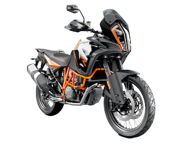
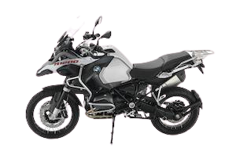

Harking back to its stylish roots from the 70s, The 2019 Harley
Davidson Low Rider is a tribute to a timeless design. Effortlessly
cool, this 2019 model offers the same iconic look with updated
features for better handling.
2
KTM SuperAdventure 1290 r

True adventure takes guts, so KTM’s rally experts brought out the
big guns and packed 1.301cc, 140 Nm of torque and 160 hp into the
world’s most advanced Travel Enduro chassis. This makes for a
mile-munching omnivore, ready to carve its name into any terrain –
the tougher, the better. It is our most extreme ADVENTURE ever, full
stop. Full throttle.
3
BMW R 1200 GS Adventure

The R 1250 GS is the queen of the touring enduro It’s just made for
impassable routes, adverse conditions and the most remote
destinations. From driver assistance systems, lighting technology
and advanced riding modes to a USB socket, the R 1250 GS Adventure
offers you everything you need to explore unknown places. And thanks
to the powerful boxer engine with BMW ShiftCam, you can reach any
destination with ease.
5
Yamaha YZF-R1
Introduced back in 1998, the Yamaha YZF-R1 was the bike to spark
the imagination of many riders as the century drew to a close. In
those days, the R1 was known as one of the highest power (140
crank HP) and fastest (0-60 in 2.9 seconds) bikes you could buy.
Coming into the 2020 model year, the R1 has had 6 generations to
develop new technology and features, which come into play with
things such as anti-slide, anti-wheelie, offset crossplane 4
cylinder firing inline engine (refined with input from both MotoGP
riders Valnetino Rossi and Maverick Vinales), throttle-by-wire
(new for 2020), and a host of other top-model systems including
optional clutchless upshifts (QuickShift in Yamaha’s
nomenclature). The R1 is still known as one of the highest power
supersport bikes with power coming in at 198 crank HP (with
optional 199 HP in track mode).